library(tidyverse)ggplot2
Announcements
exam 1 date on schedule
teams for lab 03; see announcement on slack

. . .
included in the tidyverse package
Basics
ggplot2 is the package. ggplot is the main function.
the first argument is a data frame we want to plot from
the next argument is a list of variables (columns) of our data frame that we want to visualize. These go in the aesthetic
aes()function.
Example (step by step)
Blank canvas
library(palmerpenguins)penguins %>%
ggplot()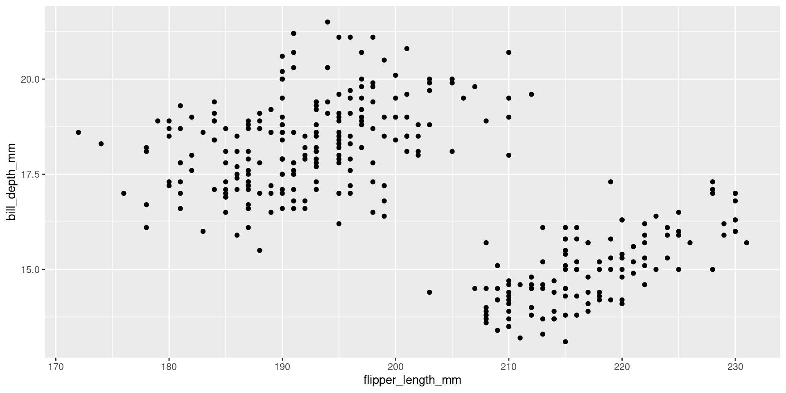
x and y aesthetics
penguins %>%
ggplot(aes(x = flipper_length_mm, y = bill_depth_mm))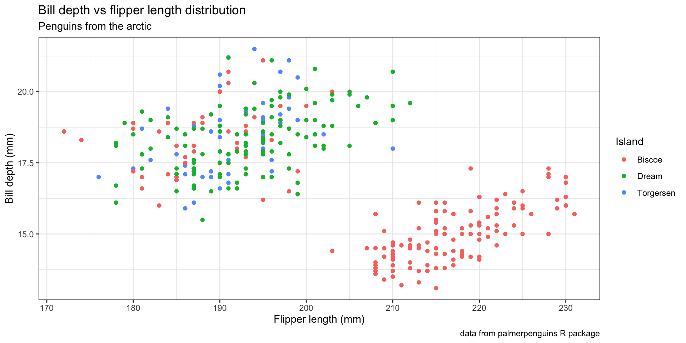
add a geometry
penguins %>%
ggplot(aes(x = flipper_length_mm, y = bill_depth_mm)) +
geom_point()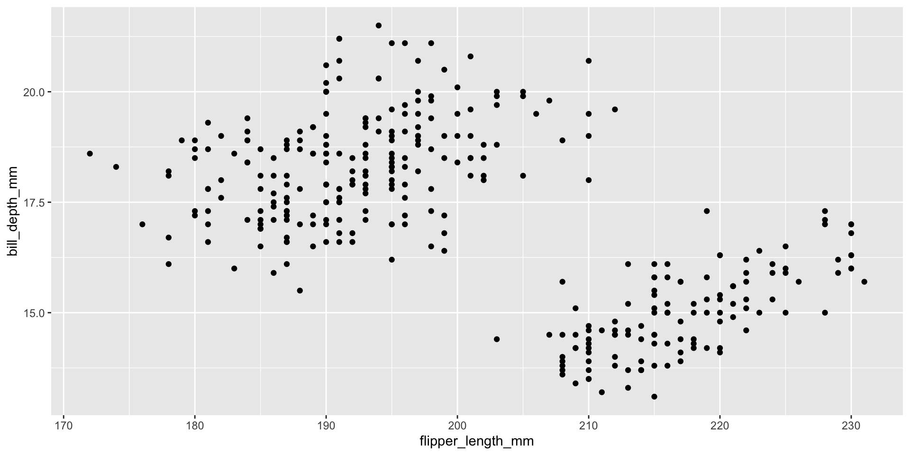
labels
penguins %>%
ggplot(aes(x = flipper_length_mm, y = bill_depth_mm)) +
geom_point() +
labs(x = "Flipper length (mm)", y = "Bill depth (mm)",
title = "Bill depth vs flipper length distribution",
subtitle = "Penguins from the arctic",
caption = "data from palmerpenguins R package")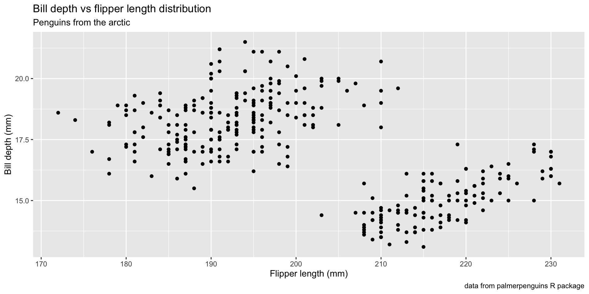
add theme and color aesthetic
penguins %>%
ggplot(aes(x = flipper_length_mm, y = bill_depth_mm,
color = island)) +
geom_point() +
labs(x = "Flipper length (mm)", y = "Bill depth (mm)",
color = "Island",
title = "Bill depth vs flipper length distribution",
subtitle = "Penguins from the arctic",
caption = "data from palmerpenguins R package") +
theme_bw()
faceting
penguins %>%
filter(!is.na(sex)) %>%
ggplot(aes(x = flipper_length_mm, y = bill_depth_mm,
color = island)) +
geom_point() +
labs(x = "Flipper length (mm)", y = "Bill depth (mm)",
color = "Island",
title = "Bill depth vs flipper length distribution",
subtitle = "Penguins from the arctic",
caption = "data from palmerpenguins R package") +
theme_bw() +
facet_wrap(~ sex)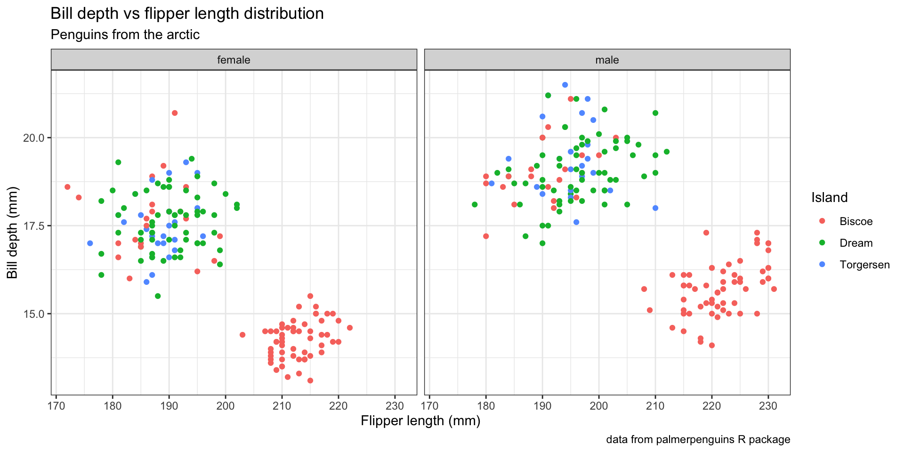
General ggplot
Anatomy of a ggplot
ggplot(
data = [dataframe],
aes(
x = [var_x], y = [var_y],
color = [var_for_color],
fill = [var_for_fill],
shape = [var_for_shape],
size = [var_for_size],
alpha = [var_for_alpha],
...#other aesthetics
)
) +
geom_<some_geom>([geom_arguments]) +
... # other geoms
scale_<some_axis>_<some_scale>() +
facet_<some_facet>([formula]) +
... # other optionsTo visualize multivariate relationships we can add variables to our visualization by specifying aesthetics: color, size, shape, linetype, alpha, or fill; we can also add facets based on variable levels.
Variable mappings (aesthetics)
The name of the argument is mapping because it says how to “map” variables to a visual aesthetic.
penguins %>%
ggplot(mapping = aes(x = bill_depth_mm, y = flipper_length_mm)). . .
When does an aesthetic (visual) go inside function aes()?
If you want an aesthetic to be reflective of a variable’s values, it must go inside
aes().If you want to set an aesthetic manually and not have it convey information about a variable, use the aesthetic’s name outside of
aes(), e.g. in the geometry, and set it to your desired value.
. . .
penguins %>%
ggplot(aes(x = flipper_length_mm)) +
geom_histogram(color = "gold", fill = "steelblue")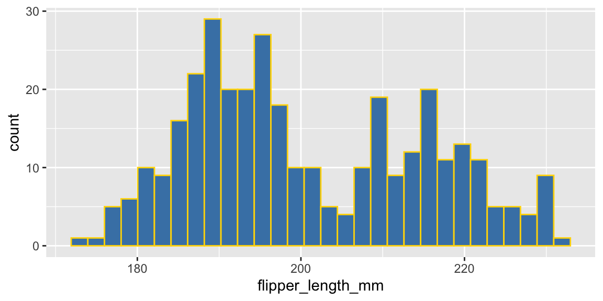
Continuous and discrete variables
Aesthetics for continuous and discrete variables are measured on continuous and discrete scales, respectively.
glimpse(mpg)Rows: 234
Columns: 11
$ manufacturer <chr> "audi", "audi", "audi", "audi", "audi", "audi", "audi", "…
$ model <chr> "a4", "a4", "a4", "a4", "a4", "a4", "a4", "a4 quattro", "…
$ displ <dbl> 1.8, 1.8, 2.0, 2.0, 2.8, 2.8, 3.1, 1.8, 1.8, 2.0, 2.0, 2.…
$ year <int> 1999, 1999, 2008, 2008, 1999, 1999, 2008, 1999, 1999, 200…
$ cyl <int> 4, 4, 4, 4, 6, 6, 6, 4, 4, 4, 4, 6, 6, 6, 6, 6, 6, 8, 8, …
$ trans <chr> "auto(l5)", "manual(m5)", "manual(m6)", "auto(av)", "auto…
$ drv <chr> "f", "f", "f", "f", "f", "f", "f", "4", "4", "4", "4", "4…
$ cty <int> 18, 21, 20, 21, 16, 18, 18, 18, 16, 20, 19, 15, 17, 17, 1…
$ hwy <int> 29, 29, 31, 30, 26, 26, 27, 26, 25, 28, 27, 25, 25, 25, 2…
$ fl <chr> "p", "p", "p", "p", "p", "p", "p", "p", "p", "p", "p", "p…
$ class <chr> "compact", "compact", "compact", "compact", "compact", "c…mpg %>%
ggplot(aes(x = cyl, y = cty)) +
geom_boxplot() +
labs(x = "Vehicle cylinders", y = "City MPG",
title = "Fuel efficiency by year") +
theme_bw()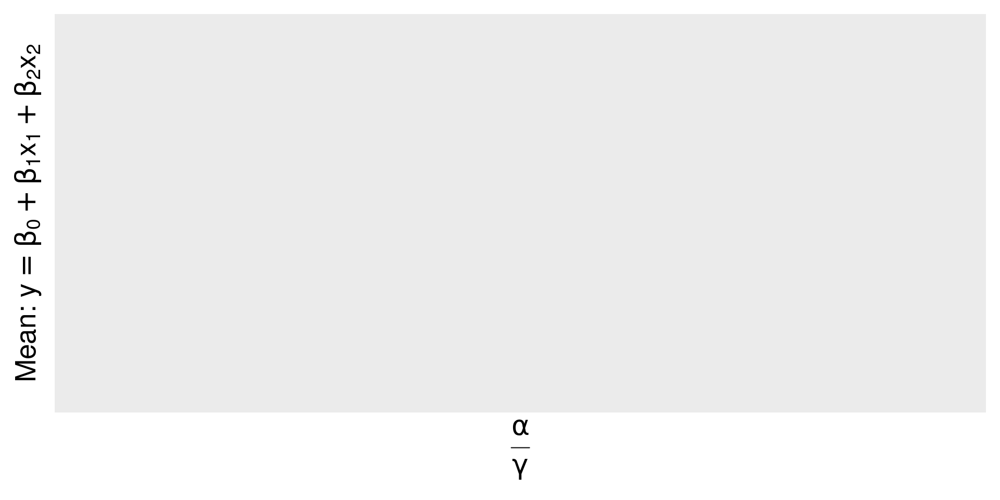
mpg %>%
ggplot(aes(x = as.factor(cyl), y = cty)) +
geom_boxplot() +
labs(x = "Vehicle cylinders", y = "City MPG",
title = "Fuel efficiency by year") +
theme_bw()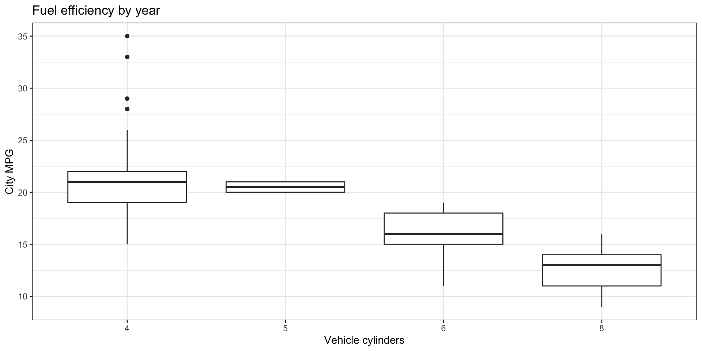
Common geometries
| geometry | description |
|---|---|
geom_point() |
scatter plot |
geom_histogram() |
histogram |
geom_boxplot() |
box plot |
geom_density() |
density plot |
geom_violin() |
violin plot |
geom_raster() |
heat map |
geom_line() |
connect observations in a line |
geom_bar() |
bar plot (try with argument position = fill) |
geom_smooth() |
add a smooth trend line (try with argument method = lm |
geom_abline() |
add an algebraic line |
See https://ggplot2.tidyverse.org/reference/ for more geometries.
Some geometries are in additional packages, e.g. see
geom_density_ridges()within the packageggridgesto create plots like these
Themes
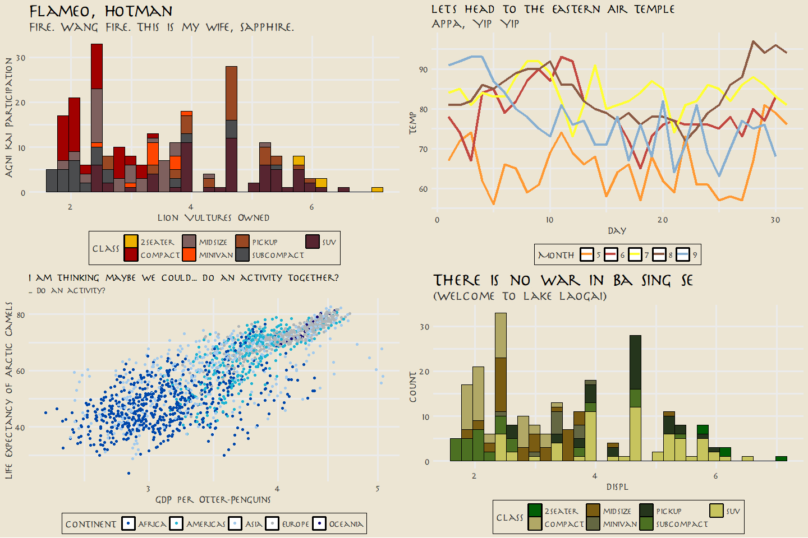
image credit:
tvthemespackage by Ryo NakagawraSee https://ggplot2.tidyverse.org/reference/ggtheme.html for a list of default themes.
Plotting functions
stat_function() is a powerful tool
x = -10:10 # range
df = data.frame(x)
f = function(x) {
dnorm(x)
}
df %>%
ggplot(aes(x = x)) +
stat_function(fun=f) +
labs(y = "Density",
title = "Gaussian density")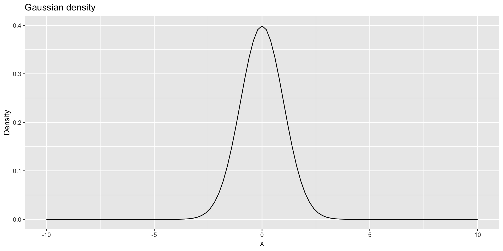
Save the plot
- Save a plot as a file on your computer with
ggsave()
penguins %>%
ggplot(aes(x = bill_depth_mm, y = species)) +
geom_boxplot() +
labs(x = "Bill depth (mm)", y = "Species") +
theme_bw()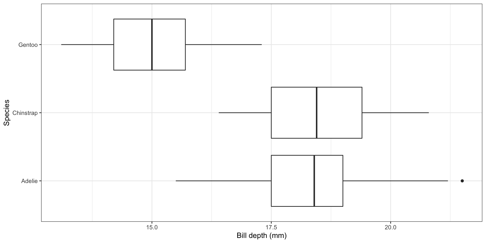
ggsave("penguin-box-plot.png",
plot = last_plot())Advanced ggplot
Annotate
ggplot() +
annotate(geom = "text", x = 10, y = 10,
label = "Text at (10, 10)", size = 10)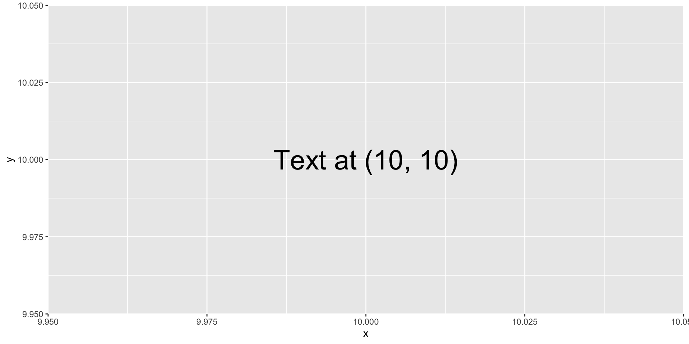
Patchwork
library(patchwork)p1 = penguins %>%
ggplot(aes(x = species, y = bill_depth_mm)) +
geom_violin() +
labs(x = "Species", y = "Bill depth (mm)",
title = "Violin plots")
p2 = penguins %>%
ggplot(aes(x = bill_depth_mm, y = flipper_length_mm, color = island)) +
geom_point() +
labs(x ="Bill depth (mm)",
y = "Flipper length (mm)",
color = "Island",
title = "Flipper length vs bill depth")
p3 = penguins %>%
ggplot(aes(x = body_mass_g)) +
geom_histogram(fill = "steelblue") +
labs(x = "Body mass (g)",
y = "Count",
title = "Distribution of penguin body mass")
(p1 + p2) / p3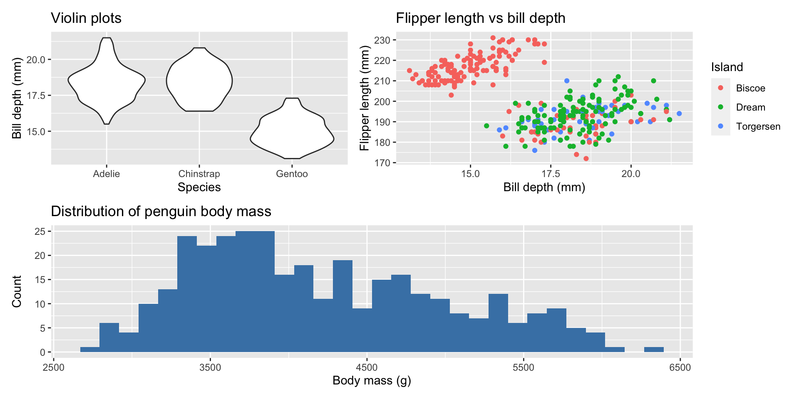
Patchwork layout
p1 + p2 +
plot_annotation(title = "Palmer Penguins", tag_levels = c("A"))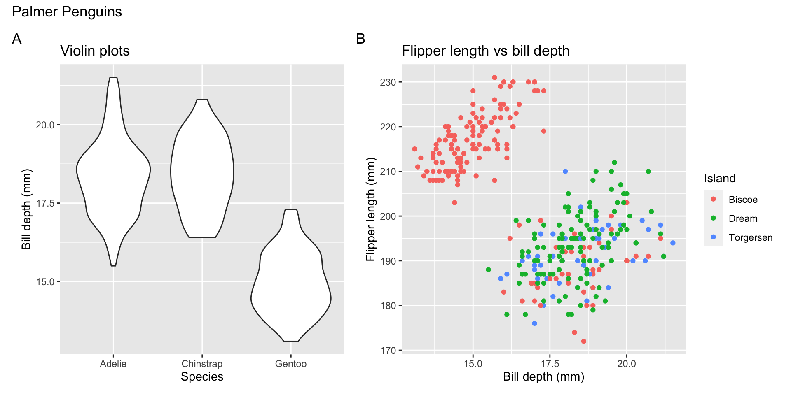
p1 + p2 + plot_layout(ncol = 1) +
plot_annotation(title = "Palmer Penguins", tag_levels = c("i"))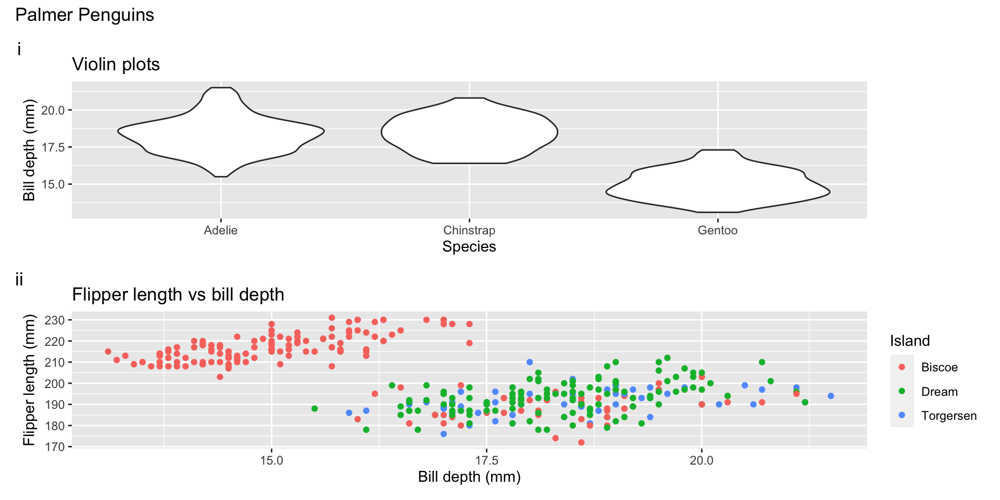
Custom ggplot functions with ggproto
Encircle the data points that have the minimum x-value
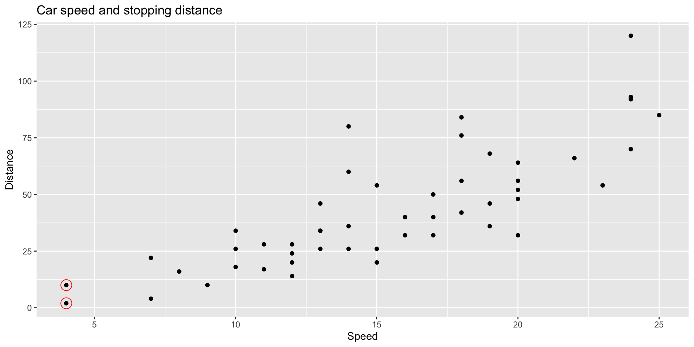
cars %>%
ggplot(aes(x = speed, y = dist)) +
geom_point() +
stat_min(size = 5) +
labs(title = "Car speed and stopping distance",
x = "Speed", y = "Distance") # create ggproto object
StatMin = ggproto("StatMin", Stat,
compute_group = function(data, scales) {
xvar = data$x
yvar = data$y
data[xvar == min(xvar), ,drop = FALSE]
},
required_aes = c("x", "y")
)
# create stat function
stat_min = function(mapping = NULL, data = NULL, geom = "point",
position = "identity", na.rm = FALSE, show.legend = NA,
inherit.aes = TRUE,
shape = 21, size = 5, color = "red",
alpha = 1, ...) {
layer(
stat = StatMin, data = data, mapping = mapping, geom = geom,
position = position, show.legend = show.legend, inherit.aes = inherit.aes,
params = list(color = color, shape = shape, size = size, alpha = alpha,
na.rm = na.rm, ...)
)
}gganimate example
library(gganimate) # animate
library(gapminder) # dataggplot(gapminder, aes(x = gdpPercap, y = lifeExp, size = pop, colour = country)) +
geom_point(alpha = 0.7, show.legend = FALSE) +
scale_colour_manual(values = country_colors) +
scale_size(range = c(2, 12)) +
scale_x_log10() +
facet_wrap(~continent) +
theme_bw(base_size = 16)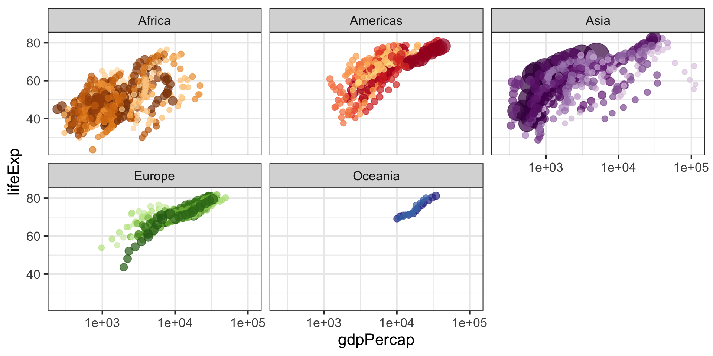
ggplot(gapminder, aes(x = gdpPercap, y = lifeExp, size = pop, colour = country)) +
geom_point(alpha = 0.7, show.legend = FALSE) +
scale_colour_manual(values = country_colors) +
scale_size(range = c(2, 12)) +
scale_x_log10() +
facet_wrap(~continent) +
theme_bw(base_size = 16) +
labs(title = 'Year: {frame_time}', x = 'GDP per capita', y = 'Life expectancy') +
transition_time(year) +
ease_aes('linear')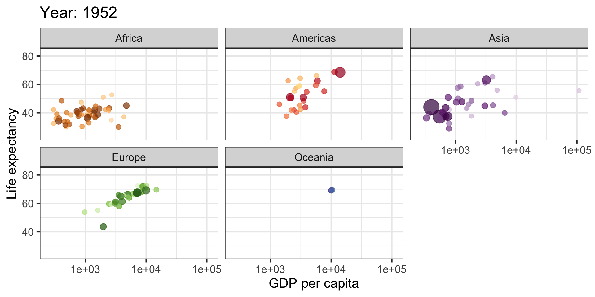
gganimate summary
Core functions
transition_*()defines how the data should be spread out and how it relates to itself across time.view_*()defines how the positional scales should change along the animation.shadow_*()defines how data from other points in time should be presented in the given point in time.enter_*()/exit_*()defines how new data should appear and how old data should disappear during the course of the animation.ease_aes()defines how different aesthetics should be eased during transitions.Label variables
- function dependent, use { } to access their values.
LaTeX labels
library(latex2exp)
ggplot() +
ylab(TeX("Mean: $y = \\beta_0 + \\beta_1 x_1 + \\beta_2 x_2$")) +
xlab(TeX("$\\frac{\\alpha}{\\gamma}$")) +
theme_grey(base_size = 20)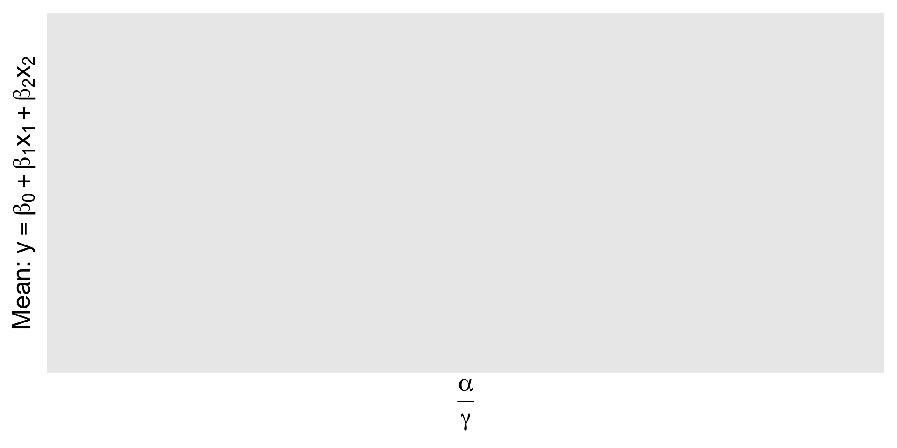
Style
- Keep plots simple
- Don’t redundantly encode information
- Use descriptive titles
- Always label units
- Use color and/or annotations to draw attention to a region of your plot
- Never make a pie chart
- Don’t use the default ggplot background. When in doubt,
theme_bw()is always better.
Further exploring
ggplot2documentationggplot2extensions: https://exts.ggplot2.tidyverse.org/gallery/top 50 ggplot2 visualizations with code!
extending ggplot2 with
ggproto